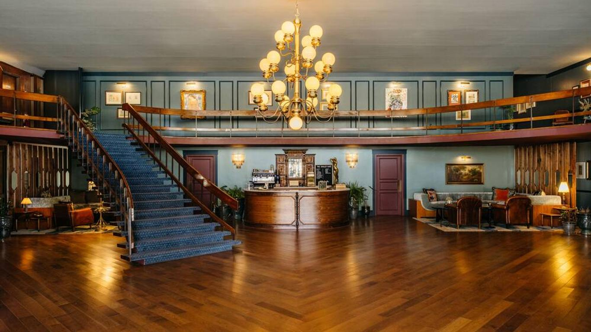

Planning Your Stay in Chattanooga
Chattanooga’s accommodations fill up quickly during peak seasons, especially during the summer months and holidays. It’s always a good idea to book in advance to secure your stay. Whether you're here for a short weekend getaway, a week-long family vacation, or a special event, there are plenty of options to choose from. Check out online booking platforms, or contact hotels directly to find the best deals and packages.
Boutique Hotels
For a stylish and personalized experience, stay at one of Chattanooga’s charming boutique hotels. With their intimate settings, unique decor, and modern amenities, these hotels provide a cozy, home-away-from-home experience.
The Edwin Hotel:
A luxurious boutique hotel located in the heart of downtown, offering chic rooms and sweeping views of the Tennessee River.
EdwinThe Dwell Hotel:
A hip, retro-inspired hotel that combines modern comfort with mid-century design. Located near local attractions like the Tennessee Aquarium and Lookout Mountain, it’s perfect for travelers who love style and convenience.
DwellDowntown Hotels
Chattanooga’s vibrant downtown area is home to a range of hotels that offer easy access to top attractions like the Tennessee Aquarium, Coolidge Park, and the Riverfront. Whether you're here for business or leisure, staying downtown puts you right in the center of it all.
Chattanooga Marriott Downtown:
A well-known hotel offering spacious rooms, a fitness center, and convenient access to nearby restaurants and shops.
MarriottThe Westin Chattanooga:
A contemporary hotel offering stylish rooms, a rooftop bar, and a prime downtown location.
WestinHistoric Inns & Bed and Breakfasts
If you’re looking for a more intimate and personalized stay, choose one of Chattanooga’s historic inns or charming bed and breakfasts. These accommodations offer the warmth and character of a historic property, often with personalized service and delicious homemade breakfasts.
The Chattanooga Choo Choo Hotel:
This former railway station is now a quirky hotel, offering rooms in historic train cars along with modern amenities.
ChooChooThe Bluff View Inn:
A stunning inn with sweeping views of the Tennessee River and located near the Bluff View Art District, this historic property provides guests with a cozy, homey atmosphere in a scenic setting.
BluffCampgrounds and Cabins
For those who prefer the great outdoors, Chattanooga offers beautiful campgrounds and rustic cabin rentals, perfect for an immersive nature experience.
Chattanooga North/Cleveland KOA:
A family-friendly campground offering both tent sites and RV hookups, plus a range of amenities like a swimming pool, playground, and hiking trails.
Lookout Mountain Cabins:
Experience the beauty of the mountains by staying in one of Lookout Mountain’s charming cabins, offering a secluded, peaceful retreat with stunning views.
Contact Chattanooga
For additional questions about our City you can cantact us.